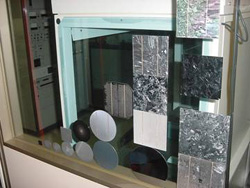
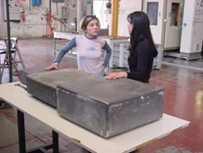
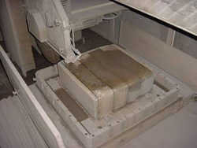
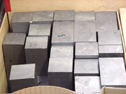
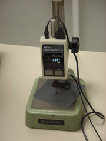
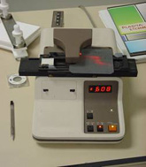
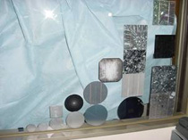
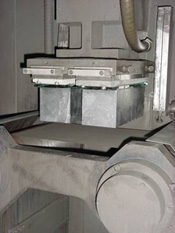

SILICON
WAFERS
Level
1 – Silicon Wafers
|  |
Many solar
cell manufacturers purchase silicon wafers as the starting point for their production.
Some manufacturers, however, also produce their own silicon wafers which can
be either a single crystal of silicon or else multicrystalline silicon. Silicon
is the second most plentiful element in the earth’s crust but must be produced
with extremely high purity to facilitate the production of high performance
solar cells. |
Each
silicon wafer is typically 0.3 mm thick and typically 100-225 cm2
in area. The single crystal silicon wafers cost more than the multicrystalline
wafers, but also produce higher performance solar cells due to avoiding the
imperfections associated with the regions known as grain boundaries, where adjacent
crystals meet. Silicon wafers normally also contain a small amount of boron
which gives the silicon a “positive polarity“ and the required conductivity
as will be discussed later.
|  |
The production of the wafers involves slicing a solid block or cylinder of
crystalline silicon in a manner somewhat similar to which an electric knife
slices a loaf of bread. As a consequence of the slicing process, some damage
occurs to the wafer surface which has to be subsequently removed. |
 |

Level
2 – Silicon Wafers
Solar
cell manufacturers specify various parameters for incoming silicon wafers.
Some of the more important ones include the following:
1.
The wafer thickness can be easily measured as shown. It has an impact
on the strength of the wafer, the performance of the final solar cell, and the
cost of the wafer. In general, the economics favour thinner wafers although
once wafers are produced below 0.2 mm thick, the strength of the wafers declines
sufficiently that considerable care in wafer handling and production processes
are necessary to prevent significant numbers from breaking. With improved processing
techniques and automation, the industry trend is towards the use of thinner
wafers to take advantage of the reduced costs that accompany the utilisation
of less silicon per wafer. At present, commercial processes in general suffer
performance loss with reduced thickness due to the inability to absorb as much
of the sunlight and the relatively poor rear surface quality that leads to the
loss in current generation for light absorbed in close proximity. With this
type of cell structure, thinner wafers simply lead to more of the light being
absorbed in these regions close to the rear surface where the light is ineffective.
|
 |
|  |
2.
The wafer resistivity is directly related to the amount of boron incorporated
into the silicon wafer. The dark saturation current component generated within
the bulk of the wafer is inversely proportional to the boron doping concentration
assuming all else remains unchanged. The dark saturation current indirectly
determines the open circuit voltage of the solar cell, therefore in general
leading to manufacturers specifying wafer resistivities that correspond to higher
boron concentrations so as to produce solar cells with higher voltages. There
is a limit, however, above which solar cell performance degrades due to the
higher boron concentrations leading to reduced minority carrier lifetimes within
the bulk material of the silicon wafer. These lifetimes simply refer to the
typical length of time that charge survives when generated through the absorption
of appropriate photons of sunlight. Reduced minority carrier lifetimes will
therefore degrade the current generating capabilities of the solar cell and
can even cause solar cell voltages to fall despite the beneficial effect of
the increased boron doping. Typical wafer resistivities are in the range of
0.3-3 Ωcm, with 1 Ωcm being most common. The resistivity
can be measured by a 4-point probe tester as shown.
|
3.
The wafer size or area is roughly proportional to the current generation
for the solar cell. Doubling the area will, in general, lead to double the
amount of light absorbed by the silicon and hence double the current. Manufacturers
in general like larger wafers as many of the processing costs are on a per unit
basis, independent of the wafer size. There are, however, disadvantages through
the use of larger wafers. These include increased resistive losses that result
from the increased challenge of extracting much larger currents from the larger
sized solar cells. These resistive losses are proportional to the square of
the current, and are exacerbated by the fact that larger sized solar cells also
necessitate most of the current having to travel longer distances to be extracted
from the solar cell. The nett result is that increased metal coverage is often
required leading to a higher percentage loss due to shading by the metal and
also increased costs for the metal per unit area of solar cell. The other disadvantage
of larger area solar cells is that the wafers in general need to be a little
thicker to give them adequate strength. This will of course have some negative
impact on the economics.
|
 |
4.
Various wafer types can be specified. Multicrystalline wafers are in
general produced through casting processes which are lower in cost compared
to techniques such as Czochralski growth and float zoning which produce single
crystal silicon wafers. In general, lower cost wafers will produce lower performance
solar cells with the overall trade-off very much dependent on the implementation
of the individual processes for solar cell fabrication in each production line.
For example, hydrogen passivation of grain boundaries can help reduce the negative
impact on solar cell performance but will add to the cost.
A
little over half the wafers used in commercial cell production are multicrystalline
with most of the remainder being produced using the Czochralski growth technique.
Studies have indicated that float zoning (FZ) may have the potential to produce
wafers at similar costs to the Czochralski techniques. FZ however, has the significant
disadvantage at present that the silicon feedstock must be in a certain form.
This removes an important advantage of Czochralski and casting techniques which
are able to use off cuts and waste material left over from other processes such
as those involved in the integrated circuits industry. At present, Czochralski
wafers produce higher performance solar cells than multicrystalline wafers but
significantly lower performance cells than float zone wafers. The Czochralski
wafers are produced by melting the high purity silicon in a quartz crucible
and then gradually extracting a seed crystal from the melt over a period of
1-2 days during which time the molten silicon progressively crystallizes onto
the seed producing a cylinder. A disadvantage is that oxygen is incorporated
into the molten silicon from the quartz crucible leading to relatively high
oxygen levels in the Czochralski wafers. It has been shown that defects and
damage are caused when the oxygen and boron levels are above certain critical
levels, leading to minority carrier lifetimes that are degraded to well below
their float zone counterparts that are able to keep oxygen levels below the
critical value.
 |
5. A couple of different techniques can be used for slicing
wafers from an ingot. Wire sawing (shown here) produces less surface
damage to the silicon wafers while simultaneously producing less sawdust or
curf loss during the sawing process. This process involves rubbing a strand
of thin wire over the surface of the ingot to gradually wear away the silicon.
The process is extremely slow although made acceptable in terms of throughput
by wrapping the same piece of wire around and around so that the entire ingot
is sliced simultaneously into wafers using the same piece of wire. |
 |
In
comparison, inner diameter diamond tipped saws will slice each individual wafer
quite quickly but only slices one wafer at a time. These saws create significantly
more damage to the wafer surface which can penetrate up to 40 microns into the
surface. Such surface damage has to be removed if high quality solar cells
are to be produced.
Wafer
manufacturers, in general, do a certain level of crude cleaning to remove the
oils and residues from the sawing process. Some manufacturers may specify increased
levels of surface preparation such as additional cleaning or even surface polishing
which can be done chemically or mechanically. In general, however, most manufacturers
need to carry out their own cleaning steps as part of the solar cell production
and therefore elect to simultaneously do whatever saw damage removal and wafer
surface preparation are considered necessary.
6.
The crystal orientation only needs to be specified for single crystal
silicon wafers. The preferred orientation for solar cell production is (100)
which makes it feasible to texture the wafer surface in low concentration anisotropic
etches such as sodium hydroxide to produce upright tetrahedral pyramids on the
surface that reduce surface reflection. Such texturing processes are less effective
on multicrystalline wafers due to the random nature of the crystals within such
wafers. Alternative texturing processes that achieve similar effects have been
developed for such wafers that do not depend on the crystallographic orientation.